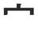
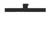

KANJIDAMAGE
Intro
Kanji facts
How to
Tags
Kanji
Radicals
Appendix
Onyomi
Ill pairs
Dupes
Articles
Long short vowlels
Synonyms
Forum
|
← Previous
Number 127
Next →

crown
(top radical)

(beret) +
丶
(dot)
like a beret but bigger, deeper, more eye-catching. . . because the king ain't playing that "regular hat" shit.
Used In
宅
安
字
宣
穴
宰
宗
寂
宇
定
審
寄
害
憲
蛇
寛
完
客
寝
宿
密
寒
実
守
確
察
家
室
寮
宙
腕
富
容
宮
官
貯
演
 KANJIDAMAGE
KANJIDAMAGE
 Number
127
Number
127